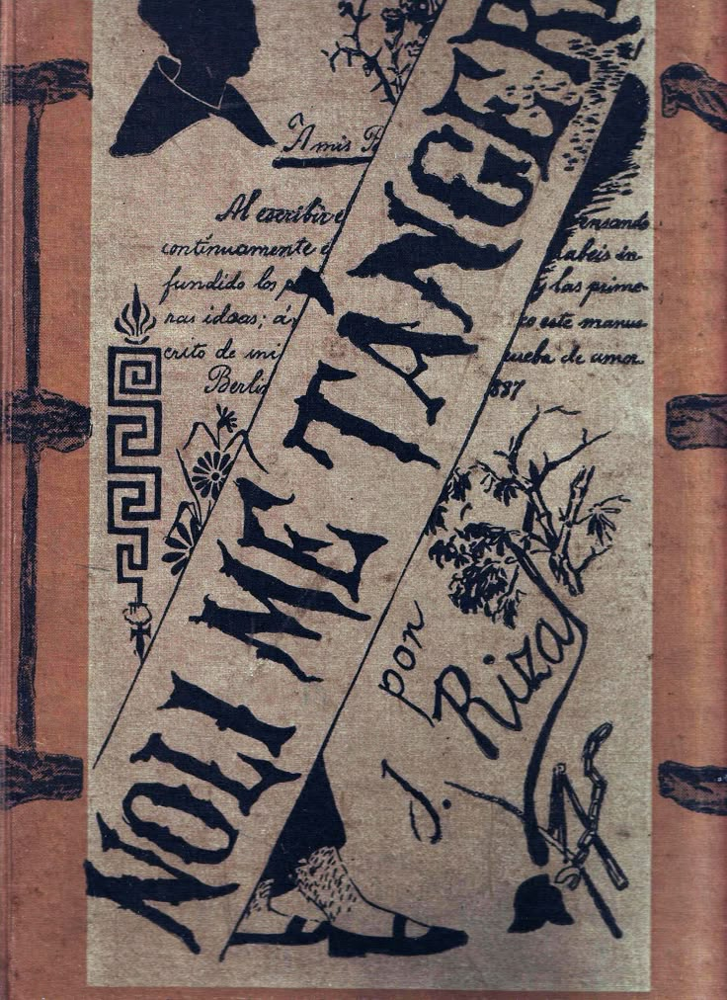
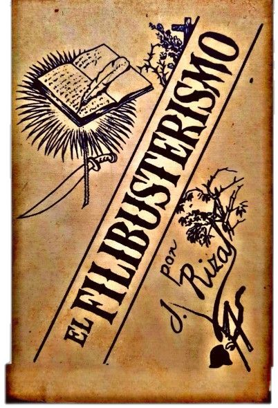

Dr. Jose P. Rizal
Honoring the legacy of Jose Rizal — a beacon of hope, courage, and love for the Philippines. His sacrifices remind us to stand tall and pursue justice and freedom.
Learn MoreAbout
Dr. José Protacio Mercado Rizal y Alonzo Reolonda was a Filipino nationalist and polymath during the tail end of the Spanish colonial period of the Philippines. An ophthalmologist by profession, Rizal became a writer and a key member of the Filipino Propaganda Movement which advocated political reforms for the colony under Spain. He was executed by the Spanish colonial government for the crime of rebellion after an anti-colonial revolution, inspired in part by his writings, broke out. Though he was not actively involved in its planning or conduct, he ultimately approved of its goals which eventually led to Philippine independence. He is widely considered one of the greatest heroes of the Philippines, and is implied by Philippine law to be one of the national heroes. He was the author of the novels Noli Me Tángere and El Filibusterismo, and a number of poems and essays.
José Rizal's Timeline
- 1861:June 19: José Protacio Rizal Mercado y Alonso Realonda is born in Calamba, Laguna, Philippines.
- 1872:Rizal, at age 11, enters the Jesuit-run Ateneo Municipal de Manila.
- 1877:Graduation from Ateneo with high honors at age 16.
- 1878:Enters the University of Santo Tomas in Manila to study medicine.
- 1882:As a student in Manila, Rizal begins to gain recognition for his writings.
- 1882:Leaves the Philippines for Spain to continue his medical studies at the University of Madrid.
- 1884:Publishes his first poem, "El Consejo de los Dioses" ("The Council of the Gods").
- 1886:Completes his medical degree and earns his licentiate in Medicine.
- 1887:Publishes his famous novel, Noli Me Tangere, highlighting Filipino societal issues.
- 1887:Publishes his second novel, El Filibusterismo ("The Reign of Greed").
- 1888:Returns briefly to the Philippines but leaves due to political tensions.
- 1891:Returns to the Philippines and establishes the La Liga Filipina, a reform-minded organization.
- 1892:Is arrested and exiled to Dapitan, Mindanao, for his activism.
- 1896:The Philippine Revolution begins; Rizal remains in exile but is seen as a national hero.
- 1896:Rizal is implicated in the revolution and is arrested by Spanish authorities.
- 1896:March 29: Sentenced to death for sedition, rebellion, and conspiracy.
- 1896:December 30: Executed by firing squad at Bagumbayan (now Luneta Park) in Manila.
Literary Works of Rizal
Dr. José Rizal's literary works greatly contributed to the awakening of the Filipino People on the Spanish tyranny to the Filipino People during the Spanish Colonial Period. Below is his greatest contribution to Philippine Independence.
 